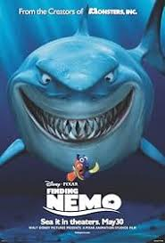

REKOMENDASI DISNEY MOVIE 🎬 🎬 🎬!!
Let the Movies Find You
Rekomendasi Film Disney Terbaik (credit: imdb.com)
Selamat datang di Pusat Rekomendasi Film Disney Terbaik!
Apakah Anda penggemar petualangan penuh aksi atau kisah cinta yang mengharukan? Di sini, kami menyusun daftar
film-film Disney terpopuler yang telah menerima pujian tinggi dari para penonton di IMDb. Mulai dari kisah klasik
yang penuh nostalgia seperti The Lion King dan Beauty and the Beast, hingga film animasi modern yang spektakuler
seperti Frozen dan Moana, rekomendasi kami menjamin momen menonton yang tak terlupakan untuk semua kalangan.
Temukan peringkat dan ulasan terkini dari IMDb, lalu pilih favorit Anda berdasarkan rating, genre, atau suasana
yang ingin Anda ciptakan. Biarkan cerita ajaib dari Disney menghidupkan layar Anda dan membawa Anda dalam petualangan
yang penuh warna.
Mari telusuri bersama dan temukan film Disney dengan rating tertinggi untuk menemani Anda di
setiap momen spesial. Siap merasakan keajaiban?
1. The Lion King 1994
Sinopsis:
The Lion King (1994) adalah film animasi klasik dari Disney yang mengisahkan perjalanan hidup Simba,
seekor singa muda, yang ditakdirkan untuk menjadi raja Hutan Savana. Film dimulai dengan kelahiran Simba, putra
dari Raja Mufasa dan Ratu Sarabi, di tanah Pride Lands yang subur dan damai. Simba belajar tentang tanggung jawab dan
kebijaksanaan dari ayahnya, yang mengajarkan prinsip “Lingkaran Kehidupan,” yaitu keseimbangan ekosistem yang harus
dijaga semua makhluk hidup.
Namun, kedamaian tersebut terganggu oleh Scar, paman Simba yang licik dan penuh ambisi. Scar bersekongkol untuk
merebut tahta dengan cara mengatur kematian Mufasa, yang kemudian membuat Simba merasa bersalah dan melarikan diri
dari kerajaannya. Di pengasingan, Simba bertemu dengan Timon dan Pumbaa, duo yang mengajarinya gaya hidup “Hakuna
Matata”—hidup tanpa kekhawatiran. Namun, setelah beranjak dewasa, Simba harus menghadapi masa lalunya dan kembali
untuk menyelamatkan Pride Lands dari kehancuran yang ditimbulkan oleh Scar.
The Lion King menggabungkan animasi yang memukau, musik karya Elton John dan Hans Zimmer, serta tema-tema mendalam
tentang keberanian, penemuan diri, dan tanggung jawab. Kisahnya menyampaikan pesan tentang bagaimana kita tak bisa
lari dari takdir dan pentingnya menjaga keseimbangan dalam kehidupan. Film ini telah menjadi salah satu animasi
terpopuler sepanjang masa dan mendapat tempat khusus di hati para penggemarnya di seluruh dunia.
| Durasi | 1 jam 24 menit | |
| Rating | 8.5/10 Imdb | |
| Pengisi suara | Jonathan Taylor Thomas, Matthew Broderick, James Earl Jones, Jeremy Irons, Moira Kelly, Ernie Sabella, Nathan Lane, Robert Guillaume, Rowan Atkinson, Whoopi Goldberg, Cheech Marin, Jim Cummings, Madge Sinclair. | |
| Producer | Walt Disney Pictures |
2. Aladin 1992
Sinopsis:
Jafar, penasihat Sultan Agrabah, mencoba mengambil lampu ajaib berisi jin dari Gua Keajaiban,
tetapi gagal karena hanya “Berlian yang Kasar” yang dapat masuk. Sementara itu, Putri Jasmine melarikan diri dari
istana dan bertemu Aladdin, seorang pencuri jalanan, di pasar. Keduanya berteman, tetapi Aladdin ditangkap atas
perintah Jafar. Jafar kemudian membebaskannya dan membawanya ke Gua Keajaiban untuk mengambil lampu, namun Abu,
monyet peliharaan Aladdin, secara tidak sengaja memicu runtuhnya gua.
Setelah terperangkap, Aladdin tanpa
sengaja melepaskan Jin dari lampu tersebut, yang kemudian menawarkan tiga permintaan. Aladdin menggunakan
permintaan pertamanya untuk menjadi pangeran agar bisa mendekati Jasmine. Meskipun Jasmine curiga, keduanya
berkeliling dunia dengan karpet ajaib, dan Jasmine mulai jatuh cinta pada Aladdin. Jafar, yang mengetahui
identitas asli Aladdin, merebut lampu dan menggunakan permintaannya untuk menjadi sultan dan penyihir paling kuat.
Aladdin kembali untuk menyelamatkan Agrabah dan memancing Jafar agar menginginkan kekuatan jin, membuatnya terjebak di dalam
lampu selamanya.
Setelah mengalahkan Jafar, Aladdin menepati janjinya untuk membebaskan Jin. Sultan pun mengubah hukum,
membiarkan Jasmine menikah dengan siapa pun yang ia cintai. Aladdin dan Jasmine akhirnya bertunangan, dan Jin
yang kini bebas berkelana menjelajahi dunia.
| Durasi | 1 jam 30 menit | |
| Rating | 8.0/10 Imdb | |
| Pengisi suara | Scott Weinger, Robin Williams, Jonathan Freeman, Linda Larkin, Frank Welker, Gilbert Gottfried, Douglas Seale. | |
| Producer | Walt Disney Pictures, Walt Disney Feature Animation |
3. Beauty and the Beast 1991
Sinopsis:
Dalam film ini, seorang peri mengutuk seorang pangeran, Beast, menjadi binatang dan para
pelayannya menjadi perabot rumah tangga karena menolak membantunya. Beast diberi cermin ajaib dan mawar; jika
ia tidak menemukan cinta sejati sebelum kelopak terakhir jatuh pada ulang tahunnya yang ke-21, ia akan terjebak
selamanya dalam bentuk binatang.
Bertahun-tahun kemudian, Belle, gadis cantik yang suka membaca,
mencari ayahnya, Maurice, yang tersesat di hutan dan ditangkap oleh Beast. Belle rela menjadi tawanan Beast
untuk menyelamatkan ayahnya. Awalnya, Belle menolak Beast, tetapi hubungan mereka perlahan membaik setelah ia
merawat Beast yang terluka.
Beast mempersembahkan perpustakaan untuk Belle dan mereka mulai menikmati
waktu bersama. Saat Belle teringat ayahnya yang sakit, Beast membebaskannya dengan harapan Belle akan kembali.
Di desa, Gaston, pemburu sombong yang menginginkan Belle, mencoba menangkap Beast dengan menghasut penduduk desa.
Setelah banyak konflik, Gaston menyerang Beast tetapi berakhir dengan kematiannya sendiri. Belle mengakui
cintanya kepada Beast, yang menyebabkan Beast berubah kembali menjadi manusia. Istana pun kembali indah, dan
pelayan-pelayan Beast menjadi manusia lagi. Film berakhir dengan Belle dan Beast menari bahagia, dikelilingi oleh
orang-orang terkasih.
| Durasi | 1 jam 24 menit | |
| Rating | 8.0/10 Imdb | |
| Pengisi suara | Paige O'Hara, Jesse Corti, Robby Benson, Richard White, Jerry Orbach, Angela Lansbury, David Ogden Stiers. | |
| Producer | Walt Disney Pictures |
4. The Little Mermaid 1989
Sinopsis:
Mengisahkan tentang Ariel, putri duyung yang merupakan anak bungsu dari Raja Triton, penguasa
kerajaan bawah laut Atlantica. Berlatar 1830-an di dalam dan sekitar perairan pulau fiktif di Karibia, Ariel berusia
18 tahun bersemangat dengan suara yang indah dan haus akan petualangan.
Ariel menghabiskan waktunya
bersama teman akuatiknya, Flounder, mengumpulkan artefak manusia dari reruntuhan kapal yang tersebar di dasar
laut, yang disimpannya di goa rahasianya. Tapi suatu hari, Ariel mengabaikan aturan ayahnya dan dengan permohonan
dari Flounder dan Sebastian, seekor krustasea dan domo utama Raja, dia tidak bisa menahan diri dan berenang ke
permukaan untuk menemukan kapal pesiar megah yang diawaki oleh Pangeran Eric yang suka berpetualang, yang dia
selamatkan ketika kapalnya hancur saat badai.
Setelah mengetahui bahwa Ariel melakukan perjalanan ke dunia
atas, Triton dengan marah menghancurkan semua harta manusia di goa Ariel. Di sisi lain, Ariel jatuh cinta dengan
pangeran Eric. Awal pertemuan keduanya adalah saat Ariel menyelamatkan Eric saat kapalnya karam. Ariel yang jatuh
cinta pun memutuskan untuk menemui sang pria idaman di dunia atas air. Perjalanan pencarian Eric pun membawa Ariel
pada konflik dengan sang ayah yang dibawah cengkraman penyihir laut bernama moleh.
| Durasi | 1 jam 23 menit | |
| Rating | 7.6/10 Imdb | |
| Pengisi suara | Jodi Benson, Samuel E. Wright, Jason Marin, Pat Carroll, Kenneth Mars, Buddy Hackett, Christopher Daniel Barnes. | |
| Producer | Walt Disney Pictures |
5. Finding Nemo 2003

Sinopsis:
Di Great Barrier Reef, Marlin dan istrinya Coral menikmati rumah baru mereka hingga serangan
barracuda merenggut Coral dan hampir semua telur mereka, kecuali satu, yang dinamai Nemo. Nemo tumbuh dengan sirip
kanan lebih kecil, dan Marlin menjadi terlalu protektif. Saat pergi ke sekolah, Nemo tertangkap oleh penyelam.
Marlin, yang berusaha menyelamatkan Nemo, bertemu Dory, ikan tang biru dengan masalah ingatan. Mereka mengalami
berbagai bahaya, termasuk ikan hiu yang mengaku vegetarian, ubur-ubur, dan ditelan oleh paus.
Sementara itu, Nemo terjebak dalam tangki ikan di kantor dokter gigi, di mana dia bertemu dengan Tank Gang yang
dipimpin oleh Gill. Gill merencanakan pelarian, tetapi Nemo berusaha menyelamatkan diri dari keponakan dokter
gigi, Darla. Marlin dan Dory akhirnya menemukan Nemo, tetapi Dory terjebak dalam jaring. Nemo memimpin teman-teman
untuk berenang ke bawah dan melarikan diri. Di akhir, Marlin lebih percaya diri dan bangga melihat Nemo pergi ke
sekolah dengan Dory, sementara Tank Gang lolos dari kantong plastik mereka di pelabuhan.
| Durasi | 1 jam 40 menit | |
| Rating | 8.2/10 Imdb | |
| Pengisi suara | Albert Brooks, Ellen DeGeneres, Alexander Gould, Willem Dafoe, Geoffrey Rush, Bill Hunter. | |
| Producer | Walt Disney Pictures, Pixar Animation Studios |